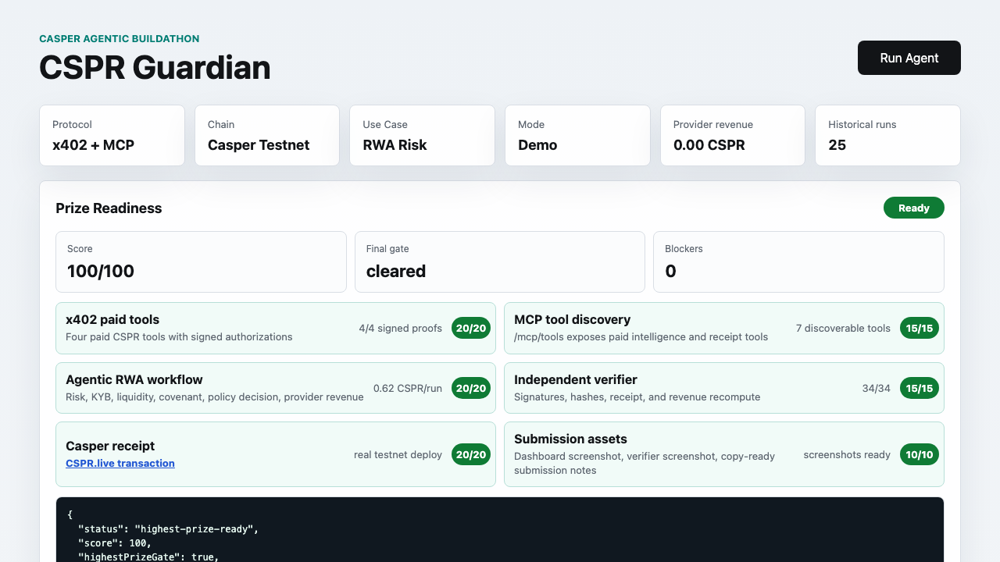

Product In One Minute
Recommended Judging Decision
Review CSPR Guardian as a strong final-review candidate. The product is simple: an agent buys the data it needs, makes a bounded RWA allocation decision, records provider revenue, and gives reviewers a public Casper proof trail instead of a private app log.
Five Reasons This Should Score Strongly
Why It Clears The Review Bar
Ninety-Second Review Path
- 1Confirm this decision page and 100/100 status.
- 2Open the final CSPR.live receipt.
- 3Run the browser verifier for all proof hashes.
- 4Open the x402 settlement batch.
- 5Open the scorecard and proof room.
- 6Open the FAQ for the production boundary.
Proof Chain
Competitive Edge
Category leadership brief: category-leadership.md. Full advantage brief: final-review-advantage.md
Visual Proof

What this screenshot proves
The project exposes a judge-visible readiness state, not only a narrative. The public pages then link that state to tests, audit, proof pack, proof manifest, browser verifier, and CSPR.live.
Boundary
This is a Casper testnet buildathon prototype. The real claims are the public receipt, settlement-anchor transactions, signed payment proofs, replay rejection, evidence verification, source code, CI, and proof hashes. Production deployment would still need licensed data providers, custody controls, compliance review, monitoring, incident response, and mainnet settlement policy.
https://testnet.cspr.live/transaction/7982fc56043fe482643d49478c0ecaf696f1e7db979021a23ae6a4841516cb5a